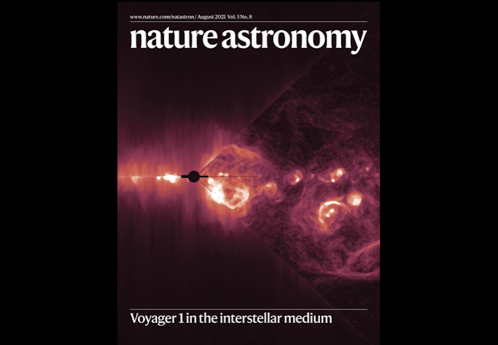
Voyager 1
Persistent plasma waves detected in interstellar space.
Personal Website

Persistent plasma waves detected in interstellar space.
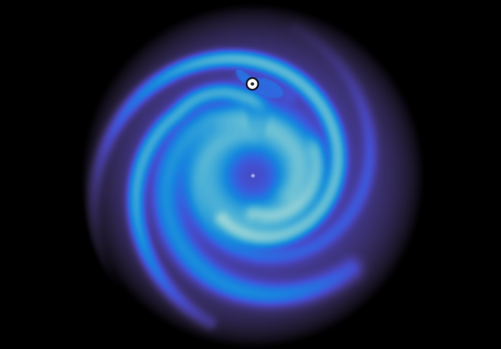
An updated electron density model of the Galactic interstellar medium.
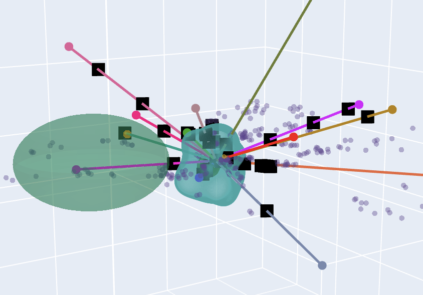
Mapping the puzzlingly abundant au-scale structures in the ISM.
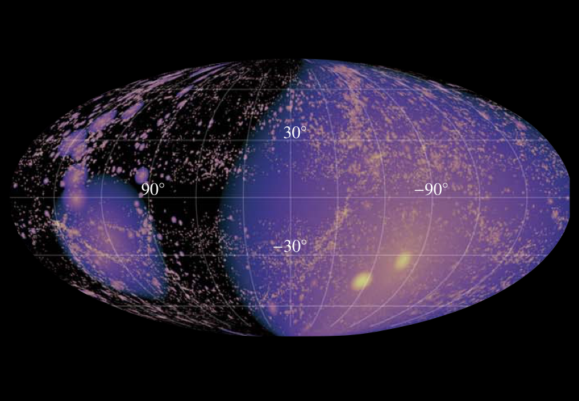
Forecasting horizons for Galactic and extragalactic transients.
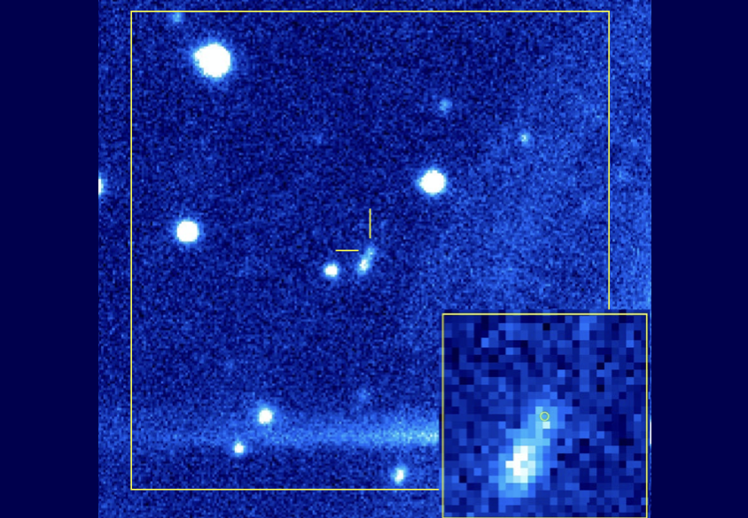
A repeating FRB in an extreme, dynamically evolving environment.
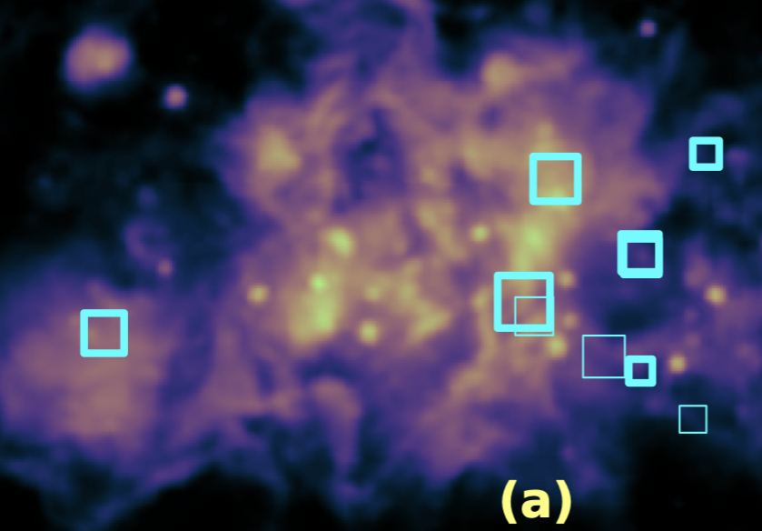
Revealing the hundreds of pulsar sightlines that probe HII regions.
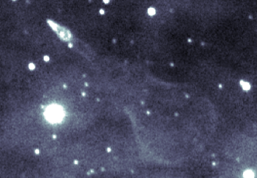
Zooming in on neutron star winds interacting with the ISM.
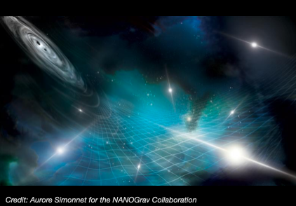
Characterizing ISM-induced noise in the search for gravitational waves.
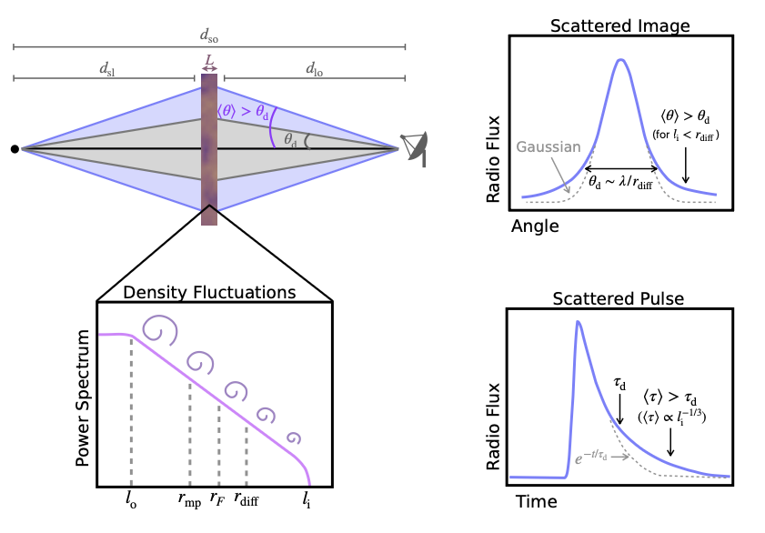
FRBs and quasars reveal energetics of multi-phase gas.
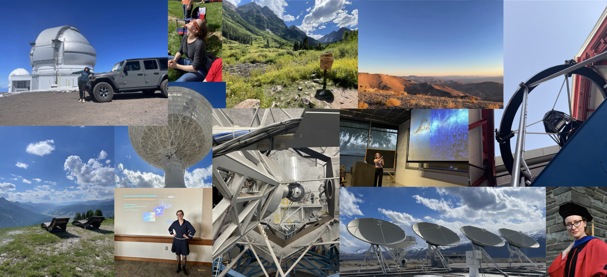
I'm a radio-turned-optical astronomer working at the intersection of observations and theory.
I grew up in northern California and went to Oberlin College, where I received a B.A. with High Honors in Physics in 2018. It was during that time that I had my first research experiences working on pulsars and fast radio bursts, both at Oberlin and during the summers at McGill University. I then moved to Ithaca, NY to pursue a Ph.D. in Astronomy at Cornell University, which I finished in 2023. During my career I've had the opportunity to work with a number of wonderful teams, including the Voyager Interstellar Mission, the NANOGrav Collaboration, and the DSA-110 group at Caltech. My research involves conducting observations at telescopes across the globe, including Magellan, Keck, FAST, and the GBT. I combine these data with large surveys to study neutron stars and ionized gas across a wide range of astrophysical environments. You can learn more about my research by clicking on the interactive image reel above (and by exploring my CV and publications linked at the top of this page).
Scientific discovery gains meaning through dissemination. Click on the images below if you'd like to see scientific explanations for general audiences; to explore more, see my CV linked at the top of this page.
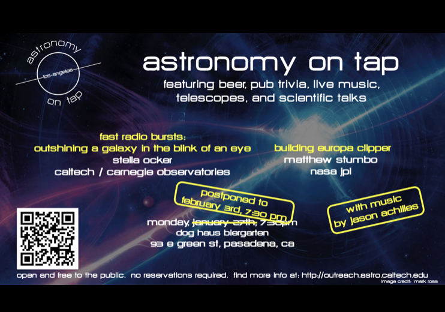
A 12 minute introduction to the story of fast radio bursts and how they were first discovered.
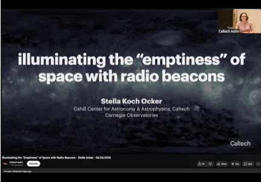
A longer-form public lecture on pulsars, fast radio bursts, and what they tell us about cosmic plasmas.
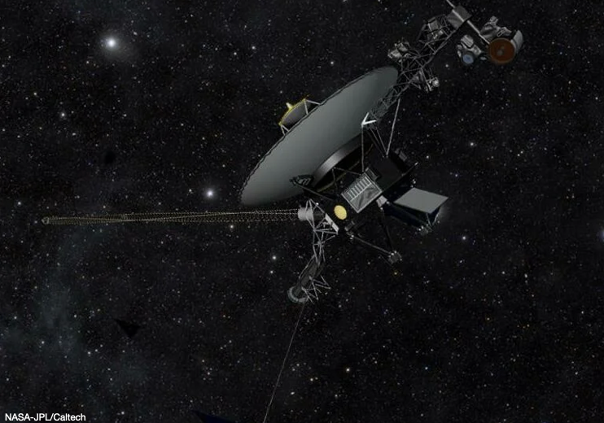
An interview with NPR on the Interstellar Probe mission concept.